💫 SFPPy Graphical User Interface (GUI)
Synopsis
This concise guide explains how to simulate mass transfer for chemical safety assessments of plastic materials in food contact 🍽️. It introduces interactive Widgets🎚️ in a Jupyter notebook that rely on the SFPPy library. The interface works both locally (in a standard web browser) and remotely on platforms such as Google Colab. Thanks to this hybrid approach, you can seamlessly combine Python code and a Graphical User Interface in one flexible environment.
Tip
You can initially skip to specific sections, but revisiting the introduction is crucial for designing scenarios involving repeated use, non-food contact simulations, complex packaging, multi-step processes, or sensitivity analyses.
0 | Introduction
0.1 | Preamble
Why SFPPy - GUI 💫 is running within a Jupyter/Colab notebook?
Why does SFPPy - GUI 💫 run inside a Jupyter or Colab notebook? Simply put, the rise of AI drove a more flexible design approach, rather than the traditional client-server GUI used in SFPP3. SFPPy provides a modular collection of tools and methods capable of handling complex, chained simulations—much like FMECAengine but in a more streamlined manner and and without the cost or constraints of a MATLAB license. Once it was ported to Jupyter and Colab (both HTML-based environments), it became evident that we could restore GUI-like features via widgets. A widge 🎚️ is an interactive interface component that can execute predefined actions and share data with the notebook. In essence, gui.ipynb (stored in the notebook’s main folder) serves as the graphical interface for SFPPy, exposing its key functionalities with zero coding required.
0.2 | Widgets
Each core SFPPy module in 📂Patankar\ folder, except properties, will expose one or several widgets required for the steps of “migration modeling”.
You will read in 📄gui.ipynb the necessary components, which are imported at the beginning of the notebook:
xxxxxxxxxx# import SFPPy widgetsfrom IPython.display import display, HTML, clear_output # for notebook appearanceimport ipywidgets as widgets # widget librayfrom patankar.food import create_food_tree_widget # SFPPy food widgetfrom patankar.geometry import create_packaging_widget # SFPPy geometry widgetfrom patankar.layer import create_multi_layer_widget # SFPPy layer widgetfrom patankar.loadpubchem import create_substance_widget # SFPPy substance widgetfrom patankar.migration import create_simulation_widget, create_plotmigration_widget # SFPPy migration widgetsIn SFPPy, data 𝄜 and simulation models 🔢 follow an intuitive syntactic structure 🔡 that AI 🧠 can process:
xxxxxxxxxxmymigration["mig1"] = mysubstances["m1"] % mycontacts["contact1"] << mypackaging["shape1"] >> mymaterials["multilayer1"] >> mycontacts["contact1"]Here, mymigration, mysubstances, mycontacts, mypackaging, mymaterials are containers (Python dict types) storing the result with a key ; "mig1" (default migration kinetics name), “m1” (default substance name), “contact1” (default contact/food/simulant name), "shape1" (default packaging geometry in 3D), “multilayer1” (default multilayer/monolayer structure).
All these objects have abstract representation in SFPPy and you do need to define them completely. SFPPy will ask you some important information via the widgets and will infer the missing properties using its own internal rules (prediction properties), its own databases (contact conditions, geometries), the chemical information found on PubChem, etc.
A “migration” workflow can be visualized as a pipeline—moving a substance from left to right to represent the physical process of mass transfer. Associated information also follows this left-to-right path, except for the packaging geometry, which affects both the food content and the packaging material. SFPPy defines three operators: % (substance ⌬ injection), << (inheritance) and >> (propagate or run).
You can launch widgets 🎚️ in any order, provided that the final combination of operations is coherent. If one widget’s results inform another, they simply “plug in” via connectors 🔌. By substituting or chaining objects ⫘⫘⫘, you can examine many different configurations.
Note
For ease of use, the food type, packaging shape, polymer(s), and substance are preselected from default values or a saved session when the notebook opens. This triggers an immediate simulation and displays the results without user interaction. Although convenient, it may be undesirable in certain production environments. To change this, look for the final line of the first cell:
xxxxxxxxxx# Force all widgets to be run without clicking at startingbuiltins._PREHEATED_ = True # Commenting it out or setting it to False prevents automatic simulation.
1 | Food Widget: 🎚️F
In SFPPy, “food” and “contact” are handled by classes that capture different physical conditions (presence or absence of food), diverse food types (fatty/aqueous, textural properties, simulants), packaging storage conditions (stacked, rolled, temperature, duration), as well as food storage and processing (frozen, chilled, ambient, hot, pasteurization, frying, etc.). Internally, 🎚️F inherits several classes, and the Food Widget 🎚️ merges up to four levels of options.
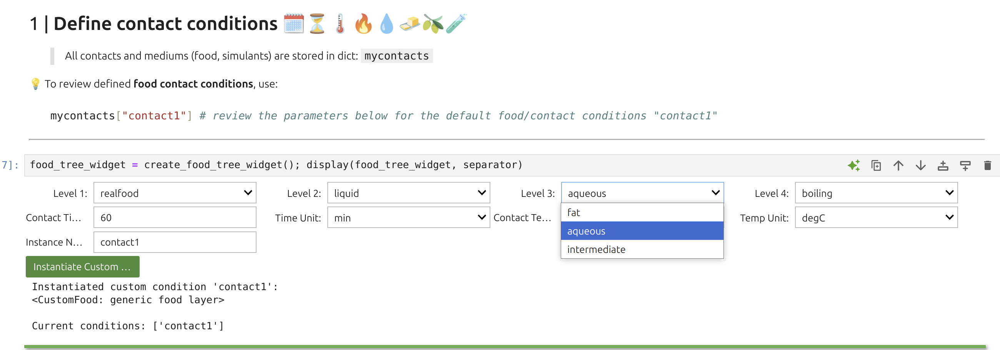
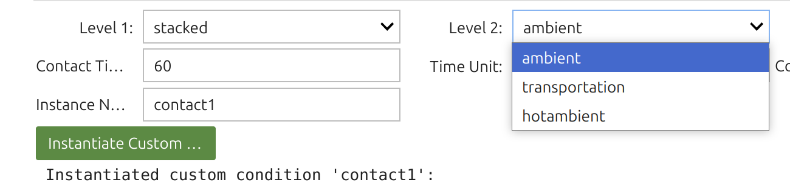
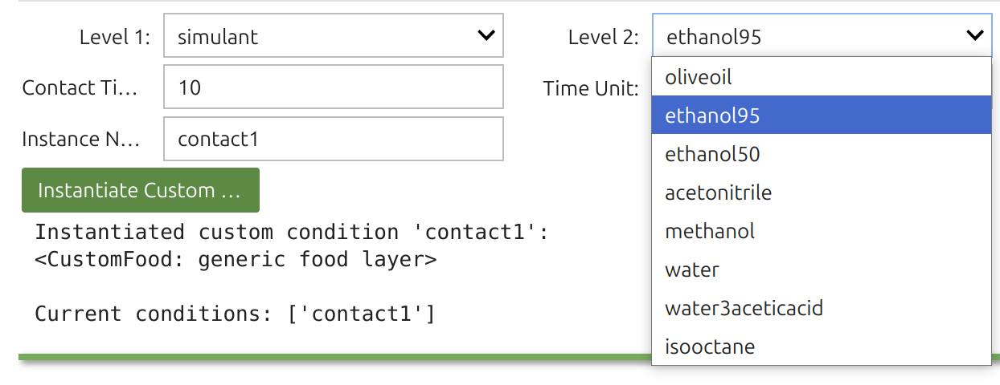
Tip
The Food Widget🎚️ configures:
You can inspect contact time and temperature with:
xxxxxxxxxxprint(mycontacts["contact1"].contacttime)print(mycontacts["contact1"].temperature)SFPPy treats food as a SFPPy automatically assigns both values, drawing on the food’s texture and the migrant’s chemical nature, along with the composition of the food or simulant. The Henry-like coefficient patankar.property —typically a Flory-Huggins approach. In SFPPy - GUI💫, these selections are done automatically but can be overridden in custom cells.
2 | Packaging Widget: 🎚️G
The representation of the packaging is implicit and a database of basic geometries is proposed to extract the surface area in contact with F and the internal volume.
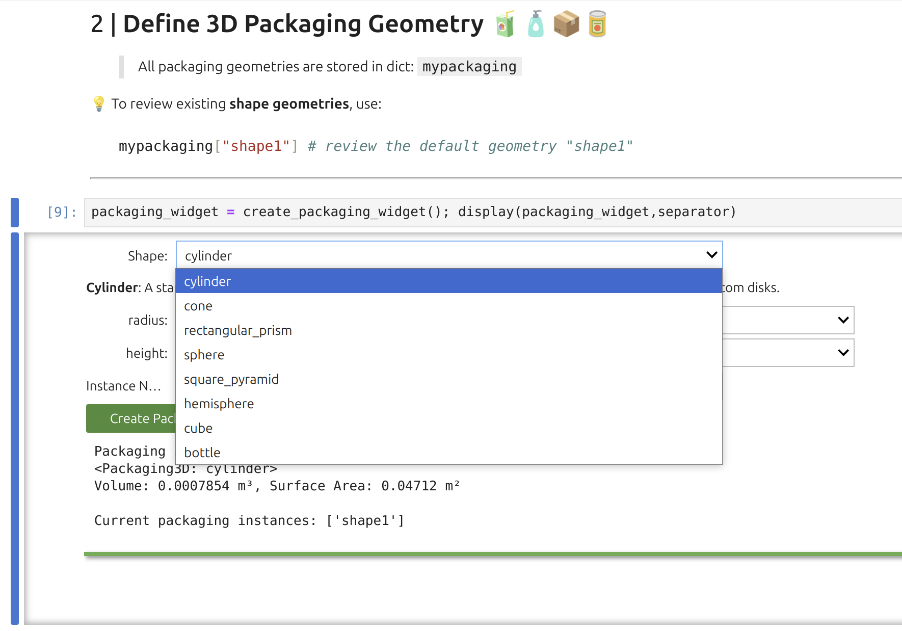
Note
As shown, the Packaging Widget uses a preset library of basic geometries to derive surface area and internal volume. Although the underlying geometry class can handle connected shapes, the widget itself is more constrained. For instance, the bottle geometry consists of two cylinders. While the widget’s interface uses only SI units, SFPPy internally supports both SI and imperial units (and their variations).
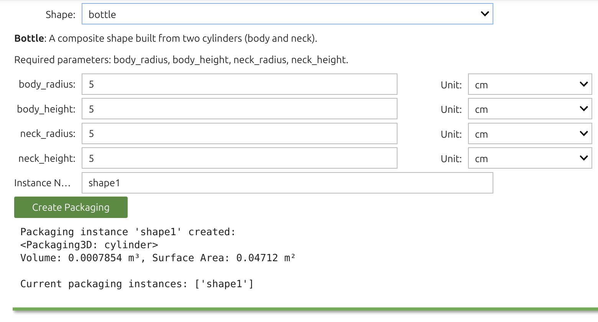
Tip
The Packaging Widget sets two key attributes:
They can be reviewed with:
xxxxxxxxxxprint(mypackaging["shape1"].get_volume_and_area())The geometry automatically informs F (food) and eventually P (material) using the pipeline F<< G>>P. This transfer includes contact temperature and duration parameters.
3 | Layer Widget: 🎚️P
The Layer Widget 🎚️ lets you assemble up to 10 layers (e.g., polymer, adhesive, paperboard, air) with assigned thicknesses and initial substance concentrations. The first layer in the user interface (index 1) contacts F, which is index 0. Concentration units are arbitrary (a.u.), carrying directly into F as well.
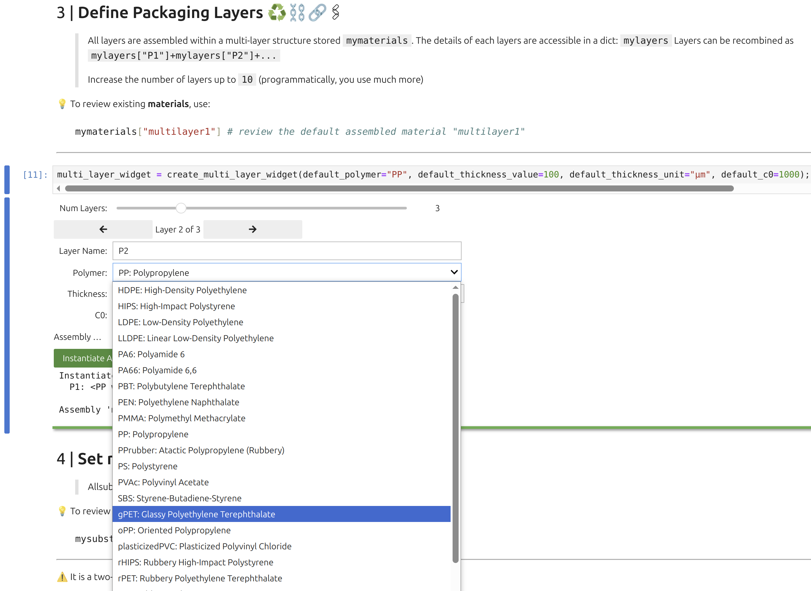
Note
The polymer database powering the widget includes density vs. temperature, glass transition temperature, crystallinity, melting point, and monomer composition, all automatically attached to the layer object when selected.
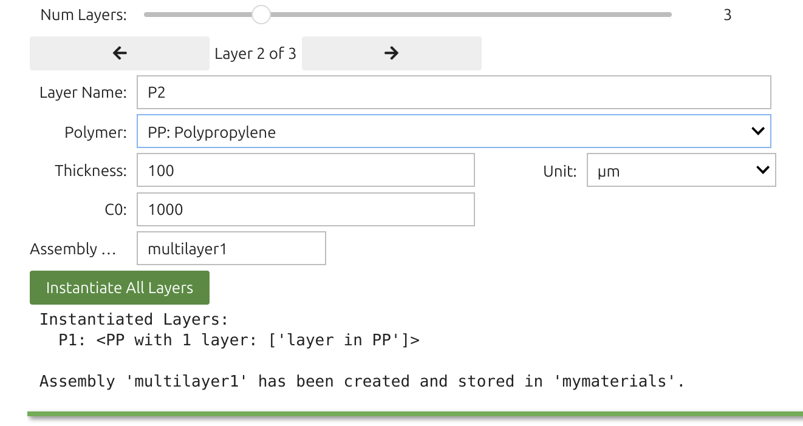
Tip
Each layer (1 through 10) is defined by:
You can confirm with:
xxxxxxxxxxprint(mymaterials["multimaterial1"]) # store the assembly of several layers (e.g. A+B+C)print(mylayers["P1"]) # mylayers store the layers alone (for reuse)print(mymaterials["multimaterial1"].C0[0]) # concentration in the first layer (Python indices start 0)Layer objects support various attributes and methods for calculating diffusivity
xxxxxxxxxxmymaterials["multimaterial1"].Dmodel = None # turn off all Dmodelsmymaterials["multimaterial1"].kmodel = None # turn off all kmodelsmymaterials["multimaterial1"].D[0] = (1e-12,"cm**2/s") # impose a D value of 1e-16 m2/s for the first layerTo set diffusivities (or Henry coefficients) in a more flexible manner, SFPPy provides layerLink objects:
xxxxxxxxxxfrom patankar.layer import layerLinkD = layerLink("D") # we instantiate an empty layerLink objectmymaterials["multimaterial1"].D = D # we attach the layerLink instance (now we can use D to modify P)D[2] = 3e-14 # we assign a ✅ fixed value to layer 3 (Python indices start at 0) of mymaterials["multimaterial1"]
4 | Substance Widget : 🎚️m
The Substance Widget🎚️ lets you run mass-transfer simulations for thousands—if not millions—of chemicals, provided they exist on PubChem and are recognized as pure compounds. Selection is a two-step process. You can enter chemical names, synonyms, or CAS numbers; SFPPy first checks its local cache, then queries the internet (if needed).
The search box accepts indifferently chemical, trade names and CAS numbers. The search will be carried out in the cached files of SFPPy and then over internet.
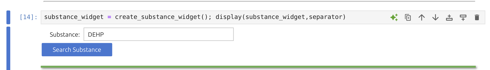
Once the Substance Widget finds a match, the key information appears in the right panel and a structural sketch on the left. Clicking the green button instantiates the substance in the notebook under the default name “m1”.
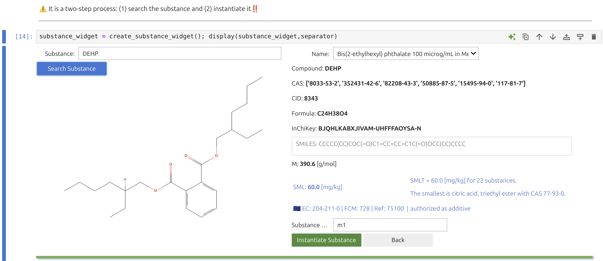
Note
The right panel features additional details for verification, including a “Name” dropdown with synonyms. The legal status under Regulation (EU) No 10/2011 (for plastic FCM) is highlighted in blue alongside an EU logo.
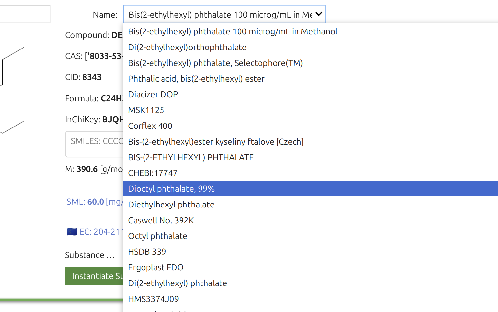
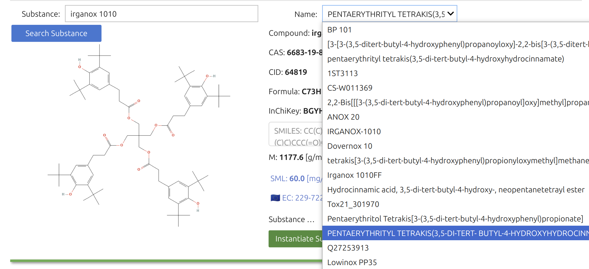
Note
For substances not positively listed, an automated ToxTree screening is displayed in red, in contrast to the EU-authorized compounds shown in blue. This toxicological assessment relies on a private ToxTree installation bundled in the SFPPy distribution, also functional in Google Colab. Clicking on the CID name opens the PubChem page with more legal or toxicological details.
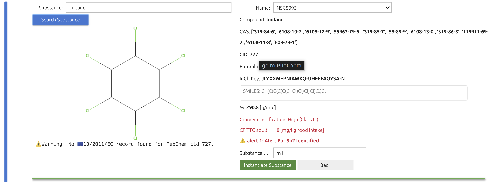
Tip
The SFPPy - GUI 💫 pipeline favors real substances (PubChem-validated) over purely numeric or hypothetical inputs. Once you instantiate a substance, SFPPy automatically retrieves its chemical structure and molecular descriptors, used to compute diffusivity patankar.property.
Possible model candidates are filtered by a rule-based system, and you can always integrate new models or rules if needed.
5 | Simulation Widget: 🎚️S
In SFPPy - GUI 💫, the simulation is executed by the pipeline:
xxxxxxxxxxm % F << G >> P >> F >> SOn-screen, the simulation Widget 🎚️ shows you four dropdown menus for picking the substance, contact conditions, packaging, and material. Results go into the global variable mymigration; you can rename the simulation (default "mig1").
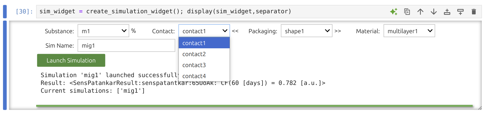
Note
You may overwrite previously saved conditions by instantiating them under the same name. Refer to the introduction if you want to make programmatic updates.
Tip
It’s straightforward to run multiple substances (e.g., 10 or more) by picking each from the widget. For more intricate scenarios, define them programmatically—for instance:
xxxxxxxxxxmymigration["mig123"] = mysubstances["m1"] % mycontacts["contact1"] << mypackaging["shape1"] >> mymaterials["multilayer1"] >> mycontacts["contact1"] >> mycontacts["contact2"] >> mycontacts["contact3"]This sequence “mig123” combines three distinct contact conditions. SFPPy’s documentation and example notebooks detail how to merge or aggregate these results.
6 | Result analysis 🎚️📊
The Result Analysis Widget 🎚️ can be placed in any notebook to process results stored in the global dictionary
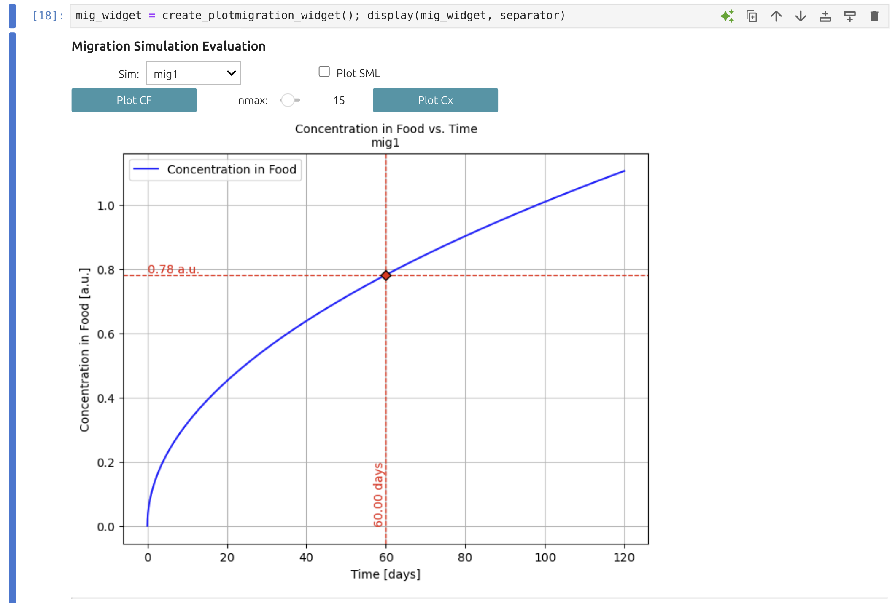
Note
With this widget, you can visualize desorption or migration kinetics (
The results can be tabulated for particular times and exported simultaneously as CSV, XLS, PDF and PNG.
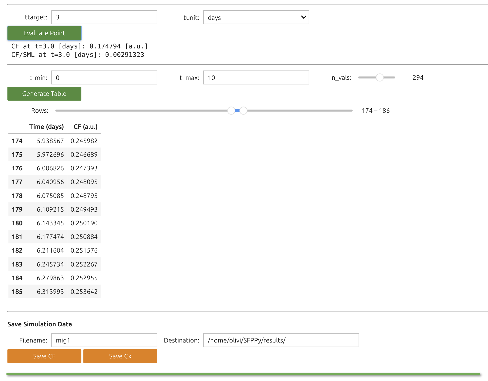
Tip
Each Python object in SFPPy has methods for merging, aggregation, and export, making the ecosystem highly adaptable.
Also remember to save your notebook to preserve widget values.
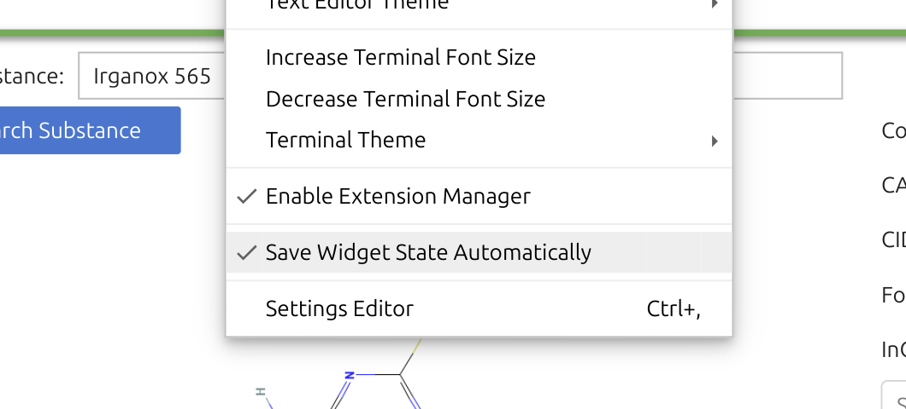
7 | Placing the widgets 🎚️ where ever you want
7.1 | Reusing SFPPy widgets
You can place SFPPy widgets 🎚️ wherever you see fit in the notebook. Only the Simulation and Result widgets rely on the outputs of the others, so they typically go last.
Once you have SFPPy available, simply import the necessary modules and set up the environment in the first cell.
xxxxxxxxxx# Mandatory imports for widgetsfrom IPython.display import display, HTML, clear_output # for notebook appearanceimport ipywidgets as widgetsfrom patankar.food import create_food_tree_widget # food widget, optionally add foodlayer, setoff, yogurt...from patankar.geometry import create_packaging_widget # geometry widget, optionally add Packaging3D...from patankar.layer import create_multi_layer_widget # layer widget, optionally add layer, layerLink, PP, gPETfrom patankar.loadpubchem import create_substance_widget # substance widget, optionally add migrant, migrantToxtreefrom patankar.migration import create_simulation_widget, create_plotmigration_widget # migration widgets# Force all widgets to be run without clicking (recommeded) builtins._PREHEATED_ = True
# Optionals widgetsfrom utils.nbutils import create_header_footer, create_logo, create_subtitle, create_disclaimer, create_alert # SFPPy utils(header,footer,separator) = create_header_footer(title="SFPPy - GUI 💫 - customized ",what="all");logo, alert, disclaimer, create_logo(), create_alert(fontsize=10), create_disclaimer()subtitle=create_subtitle("Welcome to this is a Customized Notebook")display(header,subtitle,alert,separator)After confirming you see the SFPPy logo,
you can instantiate a widget—for example, the Substance Widget 🎚️.
xxxxxxxxxxmysubtancewidget = create_substance_widget("Irganox 565") # the widget is instantiated with a substance but you leave itdisplay(mysubtancewidget) # this line brings the widget in the HTML pageNote
In Google Colab, you can rapidly create forms via Forms in Colab, though these aren’t portable outside Colab without IPyform, which is not included in SFPPy. On the other hand, Jupyter widgets work seamlessly in both environments and form the backbone of SFPPy - GUI 💫.
7.2 | Develop your own Widgets 🎚️ for SFPPy
Tip
A simple way to build custom widgets is to use ipywidgets.interact (built into Jupyter and Colab). This method inspects function arguments (scalars, lists, strings) and automatically renders a form. Updating a parameter triggers the function in real time.
A minimalist search box for extracting toxicological and molecular data could be:
xxxxxxxxxxfrom ipywidgets import interactfrom patankar.loadpubchem import migrantToxtree # replace migrantToxtree by migrant if you use a light version of SFPPy# showsubstance is a small function showing records and the imahge of any substancedef showsubstance(substance): repr(migrantToxtree(substance)); display(migrantToxtree(substance).image);# This will create a text box where the substance can be changedinteract(showsubstance,substance = "anisole")|
Minimalist Search Box The snippet above demonstrates a minimalist approach: changing the text box triggers a PubChem + ToxTree lookup and displays the molecule. Though it works, there is no error handling for unrecognized names. |
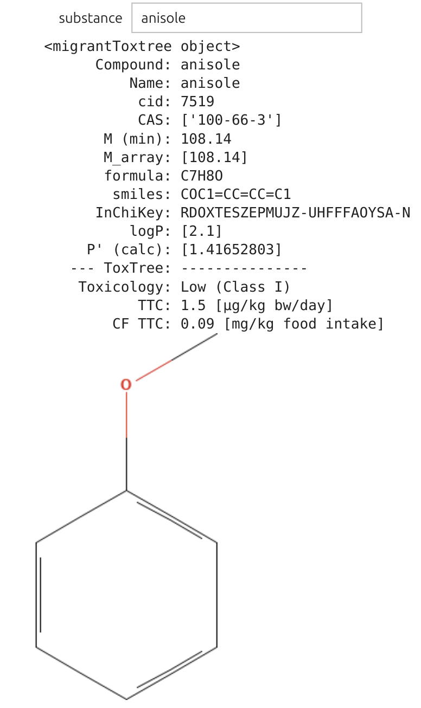 |
Here, we add dynamic sizing for the molecule image and store the newly created substance under “m2” for subsequent simulations. Real-time resizing is supported through the IntSlider widget.
Tip
The new substance so-called m2 is added to the collection of substances in the notebook via mysubstances["m2"] = tox
xxxxxxxxxxfrom ipywidgets import interact, HBox, Output, IntSliderfrom patankar.loadpubchem import migrantToxtree # or migrant if using the light versionfrom IPython.display import display
# Function to display substance information in a column format with resized imagedef showsubstance(substance,size): tox = migrantToxtree(substance) # Output widget for text text_output = Output() with text_output: display(tox) # Output widget for resized image (one-liner for resizing) img_output = Output() with img_output: display(tox.image.resize((int(tox.image.width * size/100), int(tox.image.height * size/100)))) # Arrange side-by-side display(HBox([text_output, img_output])) # Add m2 mysubstances["m2"] = tox # the selected substance is becoming active in the whole notebook as "m2"
# Create the interactive widgetinteract(showsubstance, substance="BP",size=IntSlider(value=40, min=10, max=120, step=2, description="Size (%)"))|
Optimized Search Box The placement of the objects is improved and we can zoom/dezoom in real time on the substance within the range 10-120%. The new substance "m2" is automatically to the definition of mysubstances and can be used for simulation. | .
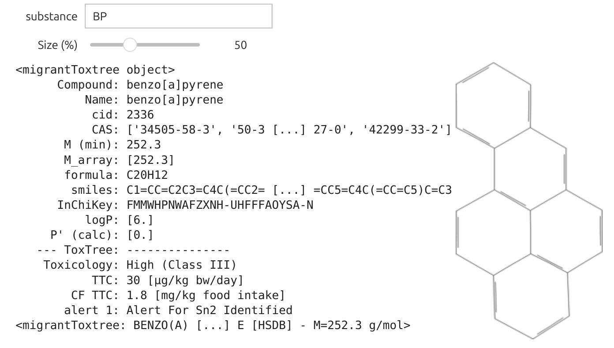 |
7.3 | An Advanced Example
7.3.1 | Connecting simulation parameters and Widgets 🎚️
All parameters used in simulations can be tied to widget controls. To make this possible, SFPPy provides a layerLink mechanism, which links internal simulation parameters to external widget values without needing to manually reassign them each time. These links broaden the capability of the core operators %, <<, and >>:
% for injecting a substance
<< for inheriting geometry/contact parameters
>> for running or propagating the simulation
Once a parameter is “linked,” any change to the widget automatically updates the simulation objects.
Note
layerLink objects can be attached to diffusivities layer objects, themselves part of the global container mymaterials.
Below is a minimal demonstration. We have a material named mymaterials["test"] whose first layer’s
xxxxxxxxxxmymigration["test"] = mysubstances["m1"] % mycontacts["contact1"] << mypackaging["shape1"] >> mymaterials["test"] >> mycontacts["contact1"]The line below binds
xxxxxxxxxxD = layerLink("D")D[0] = 1e-12 # Initial diffusivity (index=0 for the first contact layer)mymaterials["test"].Dlink = D # Attach the linkFrom this point forward, assigning a new value to D[0] immediately reflects in the simulation—no need to call "test" again. An equivalent process applies to mymaterials["test"].klink.
Tip
Unlinking is as simple as mymaterials["test"].Dlink = None, restoring the original diffusion data or model.
You can target only selected layers by setting, for example, D[2] = 2e-12 for layer index 2, or by creating a layerLink with indices=[0,2], values=[1e-12,2e-12].
7.3.2 A Full Example
In this advanced example, we create a new material "test" (copied from "multilayer1") and dynamically link ipywidgets.interact. When a slider moves, SFPPy automatically reruns the simulation with updated “test”—appears under “mymigration" and can be plotted or further analyzed.
xxxxxxxxxximport ipywidgets as widgetsimport numpy as npfrom ipywidgets import interactfrom patankar.layer import layerLink
# we create a copy of the material "multilayer" and call it "test"mymaterials["test"] = mymaterials["multilayer1"].copy()
# Create dynamic links for `D` (diffusivity) and `k` (Henry-like coefficients)D = layerLink("D")D[0] = 1e-12 # Initial diffusivitymymaterials["test"].Dlink = D # Attach the link
k = layerLink("k")k[0] = 1 # Initial k valuemymaterials["test"].klink = k # Attach the link
# Function to update both D and k and restart the simulationdef update_materials(log10D, log10k): D[0] = np.exp(np.log(10) * log10D) # Convert log10D back to normal scale k[0] = np.exp(np.log(10) * log10k) # Convert log10k back to normal scale # Run the simulation with the new values mymigration["test"] = mysubstances["m1"] % mycontacts["contact1"] << mypackaging["shape1"] >> mymaterials["test"] >> mycontacts["contact1"] # Plot with updated parameters title_text = f"Test simulation for D[0]={D[0]:.4g} m²/s, k[0]={k[0]:.4g}" mymigration["test"].plotCF(title=title_text, subtitle="change the values with the sliders above", plotSML=False)
# Create interactive widget with two long slidersinteract( update_materials, log10D=widgets.FloatSlider( value=-15, # Default value (1e-15) min=-21, # Minimum value (1e-21) max=-10, # Maximum value (1e-10) step=0.2, # Step size description="log10(D) with D in m²/s - doffisvity in the first layer", continuous_update=False, # Avoid updating while dragging layout={'width': '600px'}, # Make the slider longer style={'description_width': '150px'} # Increase description space ), log10k=widgets.FloatSlider( value=0, # Default value (k=10^0 = 1) min=-4, # Minimum value (10⁻⁴) max=4, # Maximum value (10⁴) step=0.2, # Step size description="log10(k) with k in a.u. (k/k0)=Food-to-pack partition coefficient", continuous_update=False, # Avoid updating while dragging layout={'width': '600px'}, # Make the slider longer style={'description_width': '150px'} # Increase description space ));
Interface to explore the effects of D[0] and k[0]Since the values span over several decades, a decimal log scale is proposed. The simulated curve is updated in real time once the slider is released. The result "test" is automatically updated in the global variable mymigration and is accessible to the plotmigration Widget🎚️.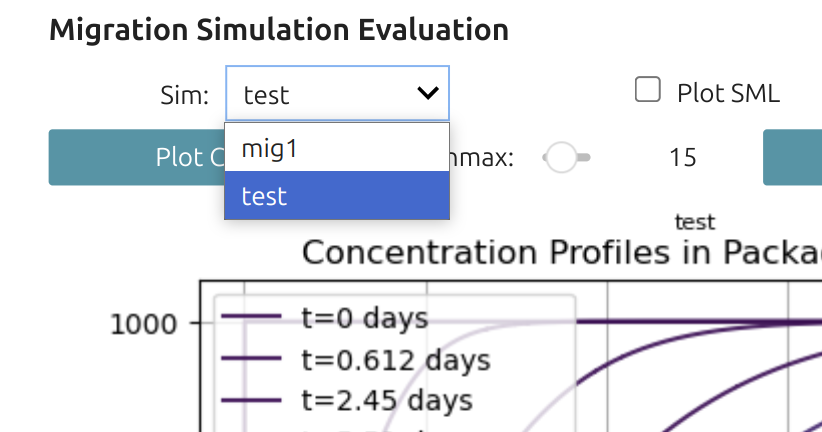 | .
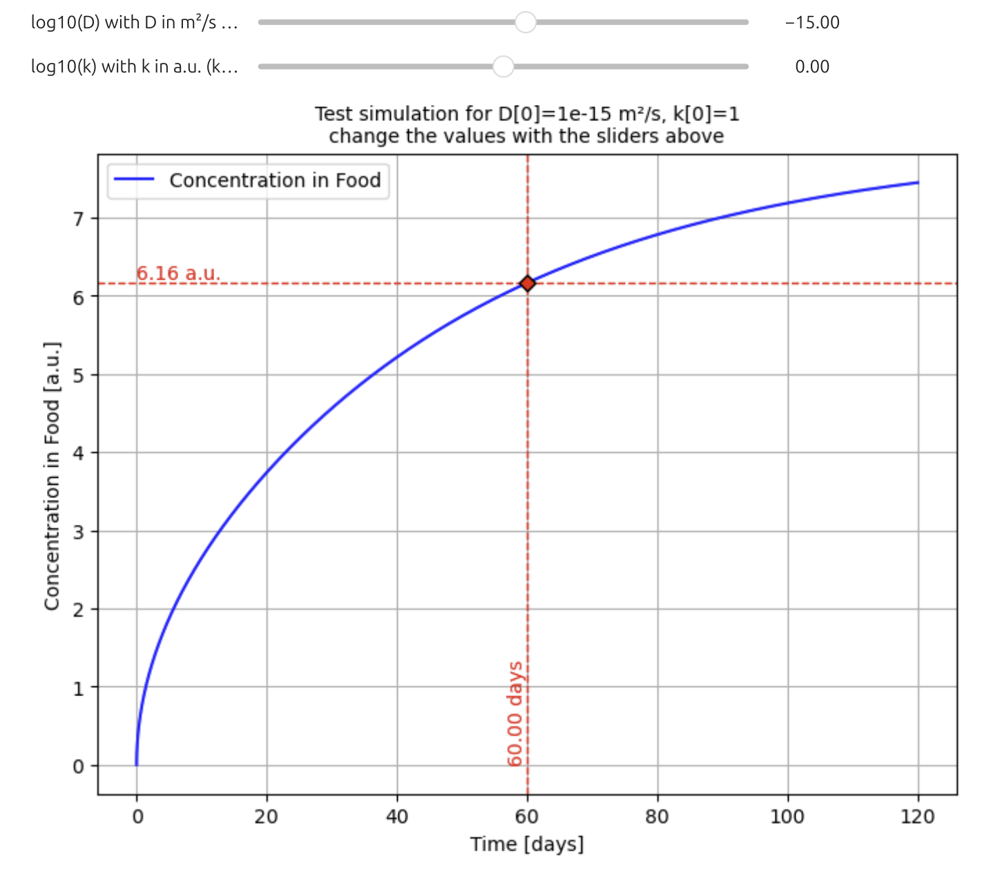 |
Important
In summary, layerLink is a quick way to connect any material parameter to a live user interface. Changing the slider drives real-time updates of diffusion and partition coefficients (or other properties), making it straightforward to investigate “what-if” scenarios on the fly.
8 | Final Words
Note
This tutorial does not cover combining results from multiple simulations in CFSimulationContainer or merging outcomes from chained simulations (using the + operator). See examples (1, 2, 3) for that. Likewise, layerLink-based fitting to experimental data appears in example 4.
For parameters that do not change dynamically during simulation, use the update() method on F (`food/foodphysics objects) or P (layer objects). For instance:
xxxxxxxxxxmycontacts["contact1"].update(contacttime=(10,"days"), contacttemperature=(40,"degC"))SFPPy interprets omitted units as SI (meters, seconds). It also supports standard and non-standard unit labels (e.g., day, days, week, month, months, µm, um) to prevent confusion.
Important
Concentration units remain in [a.u.] due to the complexities of mass vs. volume concentrations. If you assume density does not affect partitioning, you may consistently use the same arbitrary units for the initial polymer concentrations and SFPPy does feature an internal density model for many systems (polymers, liquids) if higher precision is needed.
Caution
Finally, note that any parameter you do not explicitly define is auto-assigned by SFPPy. The default SFPPy - GUI 💫 does not offer a direct compliance-reporting mechanism. For that purpose, refer to SFPPy - Comply ✅, which is fully compatible and allows advanced compliance and reporting.
Contact Olivier Vitrac for questions | Website | Documentation
This material is provided “AS IS” solely for demonstration and training. No warranty—express or implied—is given regarding its accuracy, completeness, or suitability for any particular purpose. 📌 Users are fully responsible for assessing its relevance and ensuring compliance with all applicable regulations. 🔬 The illustrative example underscores the risks of treating “migration modeling” as a mere “black box,” potentially leading to misinterpretation of mass transfer phenomena. 🚫 Neither the authors nor their organizations accept any liability for reliance on or use of this material.
🍽️🍽️🍎🍎🍎🍎🍽️🍽️🍎🍎🍎🍎🍎🍽️🍽️🍏🍏🍏🍏🍽️🍽️🍽️🍎🍎🍎🍎🍽️🍽️🍽️🍽️🍽️🍽️🍽️🍽️🍽️
🍽️🍎🍽️🍽️🍽️🍽️🍽️🍽️🍎🍽️🍽️🍽️🍽️🍽️🍽️🍏🍽️🍽️🍽️🍏🍽️🍽️🍎🍽️🍽️🍽️🍎🍽️🍽️🐍🍽️🍽️🍽️🐍🍽️
🍽️🍽️🍎🍎🍎🍽️🍽️🍽️🍎🍎🍎🍎🍽️🍽️🍽️🍏🍏🍏🍏🍽️🍽️🍽️🍎🍎🍎🍎🍽️🍽️🍽️🍽️🐍🍽️🐍🍽️🍽️
🍽️🍽️🍽️🍽️🍽️🍎🍽️🍽️🍎🍽️🍽️🍽️🍽️🍽️🍽️🍏🍽️🍽️🍽️🍽️🍽️🍽️🍎🍽️🍽️🍽️🍽️🍽️🍽️🍽️🍽️🐍🍽️🍽️🍽️
🍽️🍎🍎🍎🍎🍽️🍽️🍽️🍎🍽️🍽️🍽️🍽️🍽️🍽️🍏🍽️🍽️🍽️🍽️🍽️🍽️🍎🍽️🍽️🍽️🍽️🍽️🍽️🍽️🍽️🐍🍽️🍽️🍽️
🍽️🍽️🍽️🍽️🍽️🍽️🍽️🍽️🍽️🍽️🍽️🍽️🍽️🍽️🍽️🍽️🍽️🍽️🍽️🍽️🍽️🍽️🍽️🍽️🍽️🍽️🍽️🍽️🍽️🍽️🍽️🍽️🍽️🍽️🍽️